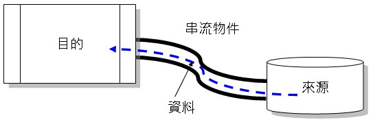
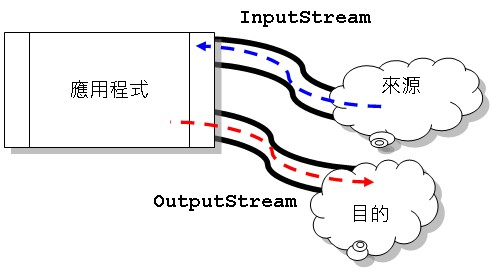
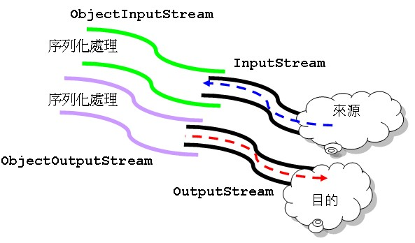

|
|
Java將輸入/輸出（Input/Output）抽象化串流的概念，資料有其來源及目的地，銜接兩者的是串流物件。以比喻的方式來說，資料就好比水，藉由水管的銜接，由一端流向另一端。  從應用程式的角度來看，如果你要將資料從來源取出，則可以使用輸入串流，如果要將資料寫入目的地，則可以使用輸出串流。在Java中，輸入串流的代表物件為InputStream，輸出串流的代表物件為OutputStream。無論資料來源或目的地為何，只要你設法取得InputStream或OutputStream的實例，接下來操作輸入輸出的方式都是一致，而無需理會來源或目的地的真正形式。  舉個例子來說，你可以設計一個通用的dump()方法： public static void dump(InputStream input, OutputStream output, int dataLength) throws Exception { byte[] data = new byte[dataLength]; int length = -1; while((length = input.read(data)) != -1) { output.write(data, 0, length); } input.close(); output.close(); } 這個方法並沒有限定來源或目的地真實形式，而是依賴於抽象的InputStream、OutputStream。如果你要將某個檔案dump為另一個檔案，則可以這麼使用它： dump(new FileInputStream(args[0]), new FileOutputStream(args[1]), 1024); 如果你要指定下載某個網路上的檔案，則可以這麼使用它： dump((new URL(args[0])).openStream(), new FileOutputStream(args[1]), 1024); 無論你的來源或目的地實體形式為何，只要想辦法取得InputStream或OutputStream，接下來其實都是操作InputStream或OutputStream的形式。例如以下是個使用ServerSocket接受客戶端連線的例子： ServerSocket server = null; Socket client = null; try { server = new ServerSocket(port); while(true) { client = server.accept(); InputStream input = client.getInputStream(); OutputStream output = client.getOutputStream(); // 接下來就是操作 InputStream、OutputStream 實例了... ... } } catch(IOException ex) { .... } 一個使用Servlet讀取一個檔案並輸出至瀏覽器的例子則是如下： response.setContentType("application/pdf"); InputStream in = this.getServletContext() .getResourceAsStream("/WEB-INF/jdbc.pdf"); OutputStream out = response.getOutputStream(); byte[] data = new byte[1024]; int length = -1; while((length = in.read(data)) != -1) { out.write(data, 0, length); } in.close(); out.close(); InputStream、OutputStream所提供的是基本的操作，如果想要為輸入輸出的資料作加工處理，則可以使用其一些子類別，這些子類別本身在建構時，都可以接受InputStream、OutputStream實例，例如具備緩衝區作用的 BufferedInputStream、 BufferedOutputStream，具備資料轉換處理作用的 DataInputStream、 DataOutputStream，具備物件序列化能力的 ObjectInputStream、 ObjectOutputStream 等。 InputStream、OutputStream 與以上所提及的一些子類別（當然還有別的），實現了設計模式中的 Decorator 模式。無論是 BufferedInputStream、 BufferedOutputStream、 DataInputStream、 DataOutputStream、 ObjectInputStream、 ObjectOutputStream 等，其本身都沒有改變 InputStream、OutputStream 的行為，只不過在 InputStream 取得資料之後，再作一些加工處理，或者是要輸出時作一些加工處理，再交由 OutputStream 真正進行輸出。 這有點像是小水管接上大水管：  只要了解InputStream、OutputStream抽象了資料來源與目的地的概念，以及了解InputStream、OutputStream及其子類別實現了Decorator 模式，無論實體來源時目的地為何（網路？資料庫？檔案？），無論打算對資料作何種加工處理（套上哪個水管？甚至套接多個加工處理的水管？），就不再會被java.io套件中眾多的API給搞混。 |